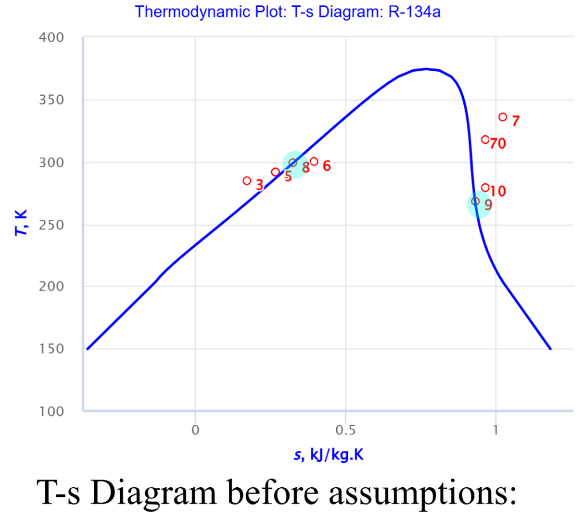
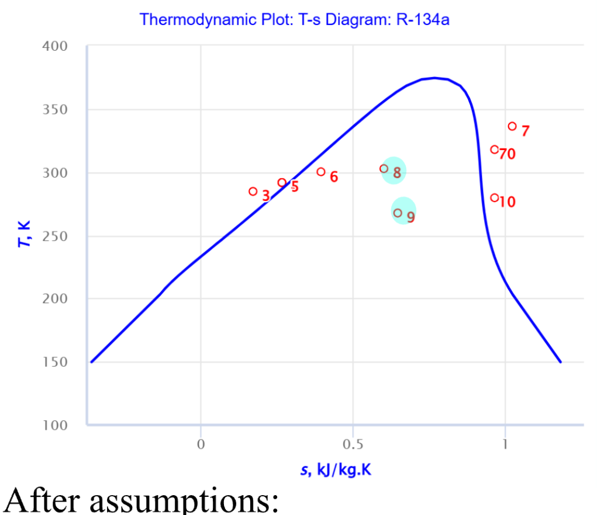
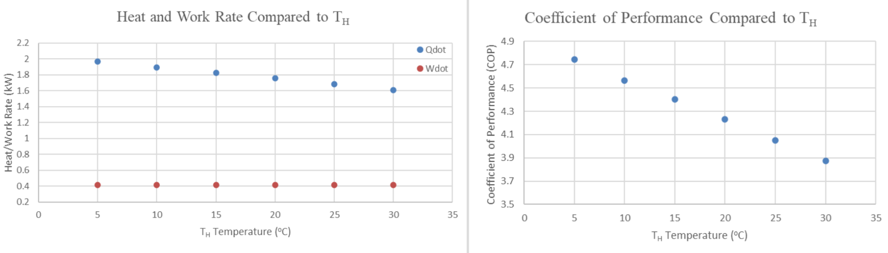

Problem
A compressor needs to be characterised by interpreting real lab results from a refrigeration cycle. The image above is the given diagram of the system and all measurements that are available.
Data & methodology


Plotting the raw observations on a T-s diagram results in the states displayed on the left image. The key states to observe are 8 and 9, although we can mathematically calculate the required information from these states, the states displayed do not match with a thermodynamics based understanding.
Much of this project involved evaluating and determining the correct conditions for states 8 and 9. Rather than simply changing the provided data to produce reasonable results, all assumptions and modifications were clearly stated and justified.
The main justification for reconsidering these states was that they were extremely close to the saturation temperature. As a result, even a small temperature error in either direction could completely change the predicted thermodynamic state. To resolve this, equations were developed using the first law of thermodynamics to determine more appropriate values for these states.
The system initially contained more unknowns than could be solved directly, so further thermodynamic knowledge was used to reduce the number of unknowns. This involved applying appropriate assumptions about the processes, such as identifying sections as isobaric or quasistatic, allowing the remaining state properties to be determined while keeping all assumptions clearly documented.
Results

The image above shows the simulated performance under different high temperatures. This is under the assumption of -4 °C, low temperatures.
The compressor was found to have an average isentropic efficiency of 56.7% across the different test cases, the isentropic efficiency was found to be highly sensitive to changes in the low temperature, with a value of -4 °C recommended for improved performance. The high temperature was also recommended to remain below 25 °C to maintain sufficient heat transfer through the condenser. A longer condenser was suggested to ensure the refrigerant fully condenses before reaching the throttle valve.
Reflection
Working through this project taught me a lot about how to gather, interprate and approach measured data. The measurements initially did not make sense from a conceptual standpoint, however this did not mean that they were not useful, and it is not ethical to tweak values until it does make sense. The results still carried meaningful information and through engineering analysis and documented justifications the data was made more meaningful.
This taught me that blindly trusting data, or blindly rejecting data could be very harmful and loses the actual meaning behind many imbalances. Data should always be processed through conceptual understanding as well as justified assumptions.